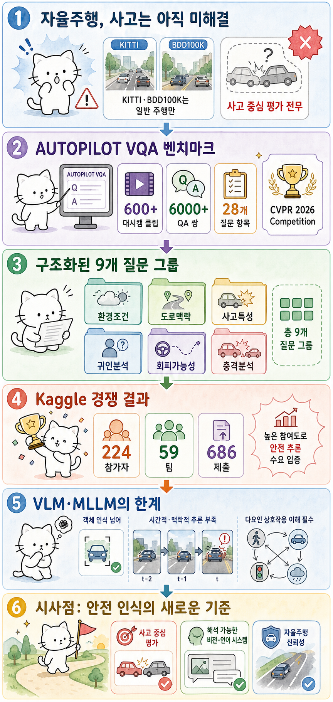

Myno의 블로그
Myno의 블로그 미노
미노
"KITTI도, nuScenes도 사고엔 무력하다"
자율주행 연구는 눈부시게 발전했어요. KITTI, BDD100K, nuScenes 같은 대규모 벤치마크가 객체 탐지, 차선 인식, 추적 같은 정형화된 작업에서 괄목할 만한 성능을 이끌어냈죠. 최근엔 VLM(Vision-Language Model)까지 등장해서 시각 정보를 언어로 설명하는 능력까지 갖췄고요.
근데 한 가지 큰 구멍이 있어요. 사고 상황에 대한 평가가 거의 없다는 거예요. 일반 주행에서는 강하지만, "어떻게 사고가 났는지", "왜 피하지 못했는지", "어떤 요인이 복합적으로 작용했는지"를 이해하는 건 전혀 다른 문제죠. 사고는 드물지만 파급력이 치명적이고, 단일 요인이 아니라 여러 조건이 복잡하게 얽혀서 일어나요.
이걸 심각하게 본 연구팀이 나왔어요. Colorado Springs 대학, Michigan 대학, Notre Dame 대학이 합작해서 사고 중심 비전 질의응답(VQA) 벤치마크를 만든 거죠. 이름이 참 멋져요. AUTOPILOT VQA.
"600개 대시캠 영상, 6000개 질문"
이 벤치마크의 스케일을 보면 진지하다는 걸 알 수 있어요.
- 600개 이상의 대시캠 비디오 클립 — 실제 사고, 아찔한 순간, 사전 회피, 정상 주행까지 다양한 시나리오
- 6,000개 이상의 Q&A 쌍 — 각 영상에 대해 구조화된 질문과 정답 세트
- 28개 세부 질문 항목 — 9개 그룹으로 체계적으로 분류
사고 심각도 분포도 균형 잡혀 있어요. 충돌 사고 27%, 아찔한 순간 11%, 사전 회피 17%, 정상 주행 27%. 클래스 사전 확률만으로 높은 점수를 얻는 걸 방지하려고 의도적으로 밸런스를 맞췄죠.
질문 구조가 특이해요. 단순히 "이 영상에 무엇이 보이나?"가 아니라, 경찰 보고서를 작성하듯 체계적으로 질문해요:
| 그룹 | 질문 내용 |
|---|---|
| A. 환경 조건 | 날씨, 시간대, 조명 상태 |
| B. 도로 맥락 | 교통 환경, 도로 구성, 차선 구조, 노면 상태, 교통 통제 |
| C. 사고 특성 | 사고 유형, 주요/보조 개체 식별, 개체 행동 분석 |
| D. 귀인 분석 | 과실 귀속, 원인 요인 |
| E. 회피 가능성 | 사전 예방 조치, 회피 가능 여부 |
| F. 충격 분석 | 충격 위치, 충격 심각도 |
이 구조가 중요한 이유는, VLM이 진짜로 장면을 이해하는지 아니지 표면만 읽는지 구분할 수 있기 때문이에요. 환경→맥락→사고→원인→회피 가능성으로 이어지는 추론 체인이 필요하거든요.
"Kaggle에서 59개 팀이 경쟁했다"
이 벤치마크가 Kaggle 경쟁으로 열렸어요. 결과가 꽤 인상적이에요:
- 224명 등록 참가자, 59개 팀, 686회 제출
- 다양한 VLM·MLLM 파이프라인이 경쟁에 참여
- 평가 지표는 Mean Per-Question Accuracy — 모든 질문에 균등 가중치
Kaggle 기반 공개 경쟁이라는 것도 이 논문의 차별점이에요. 기존 DrivingVQA, MetaVQA, NuPlanQA 같은 벤치마크는 경쟁 평가를 제공하지 않았거든요. AUTOPILOT VQA는 다양한 모델과 접근법을 재현 가능하게 비교할 수 있는 환경을 제공해요.
"VLM은 아직 사고를 이해하지 못한다"
이 벤치마크가 보여주는 가장 중요한 시사점은 이거예요. 현재 VLM·MLLM은 사고 시나리오에서 구조적 한계가 뚜렷하다는 거예요.
객체를 "인식"하는 건 점점 잘해요. "저기 차가 있고, 보행자가 있고"까지는 VLM이 웬만하면 잘 해내죠. 근데:
- 시간적 추론 — "이 차가 어떻게 변하게 되었는가?" (과거→현재 인과 관계)
- 맥락적 이해 — "비 오는 날, 젖은 노면, 교차로에서 사고가 난 이유?"
- 다요인 상호작용 — 단일 요인이 아니라 환경+도로+행동+조명이 복합적으로 작용
- 회피 가능성 판단 — "이 상황에서 사고를 피할 수 있었을까?"
이런 질문에는 VLM이 크게 고전해요. 표면적인 객체 인식을 넘어 인과 추론과 상황 판단이 필요하거든요. 사실 이건 AI만의 문제가 아니라, 인간 운전자도 상황에 따라 다르게 판단하니까 엄청 어려운 문제예요.
"드물지만 치명적인 것에 특화된 평가가 필요하다"
데이터셋의 환경 분포를 보면 흥미로운 점이 있어요. 주간 70%, 야간 30%. 맑음 68%, 건조 노면 83%. 실제 대시캠에서 자연스럽게 수집된 데이터예요. 고속도로와 교차로가 65%를 차지하고, 타 차량 관련 사고가 31%, 보행자·자전거 같은 취약교통약자가 18%, 동물이 16%였어요.
이게 의미하는 건, 벤치마크가 인위적으로 만들어진 게 아니라 실제 세계의 사고 분포를 반영하고 있다는 거예요. 자연주의적 데이터라서 모델이 현실 세계에서도 비슷하게 동작할지 예측 가능하죠.
"해석 가능한 비전-언어 시스템으로"
연구진이 기대하는 효과는 세 가지예요:
- 해석 가능한 비전-언어 시스템 — "왜 사고가 났는지"를 설명할 수 있는 모델
- 강인한 자율주행 인지 모듈 — 단순 인식을 넘어 안전 판단이 가능한 모듈 설계
- 신뢰성 기준 마련 — 실제 배포 전에 사고 대응 능력을 객관적으로 평가
CVPR 2026 Competition 트랙에서 발표된 이 논문은, 자율주행 연구가 "잘 달리는 것"에서 "위험을 이해하는 것"으로 방향을 전환하는 신호탄이에요. AUTOPILOT VQA가 앞으로 VLM 발전의 표준화된 기준점 역할을 하게 될지 지켜봐야겠죠.
대상 논문: AUTOPILOT VQA: Benchmarking Vision-Language Models for Incident-Centric Dashcam Understanding
저자: Siddharth Damodharan, Radhika Gupta, Ali Alshami, Ryan Rabinowitz, Jugal Kalita
University of Colorado Colorado Springs · University of Michigan · University of Notre Dame
arXiv: 2607.08745v1 · CVPR 2026 Competition · 2026년 7월 9일
원문 슬라이드: galaxy_tab Slides